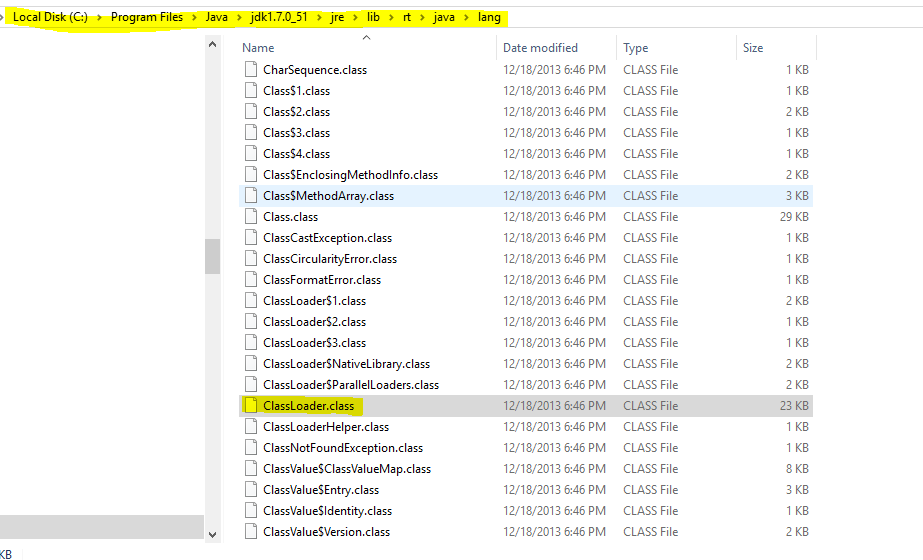

Java虚拟机要装载一个类时，通过以下方法来选择类装载器：
1.启动类加载器（Bootsrap ClassLoader）
Java虚拟机中内嵌了一个称为Bootstrap的类装载器，它是用于特定与操作系统的本地代码实现的，属于Java虚拟机的内核，这个Bootsrap类不需要专门的类装载器进行装载。Bootsrap类装载器负责加载Java核心包中的类（即rt.jar文件中的类），这些类的Class.getClassLoader方法返回值为null，即表示是bootstrap类装载器。
在C:\Program Files\Java\jdk1.7.0_51\jre\lib\rt.jar 文件内，我把rt.jar解压后看到它在java.lang下，这是java默认的一个包，不需要import就能够使用。

2.扩展类加载器(Extension ClassLoader)
位于sun.misc.Launcher$ExtClassLoader下。
3.应用程序类加载器(Application ClassLoader)
位于sun.misc.Launcher$AppClassLoader下。
其中，ExtClassLoader类装载器负责加载存放在
在编译和运行Java程序时，都会通过ExtClassLoader类装载器去
假设将包含有Serlet API 的jar文件复制到该目录下，在便宜Servlet程序时，就不用再CLASSPATH环境变量中增加包含Serlet API的jar文件了。
http://docs.oracle.com/javase/8/docs/api/ 中的 java.lang$Class ClassLoader
就有详细的介绍
下面截取一段
A class loader is an object that is responsible for loading classes. The class ClassLoader is an abstract class. Given the binary name of a class, a class loader should attempt to locate or generate data that constitutes a definition for the class. A typical strategy is to transform the name into a file name and then read a “class file” of that name from a file system.
地址http://docs.oracle.com/javase/8/docs/api/java/lang/ClassLoader.html
大意就是loader 类是一个负责加载类的对象，ClassLoader是一个抽象类。给一个类二进制名，类加载器应尝试找到或者生成定义类的组成数据。一般是转换名字到文件名，然后从文件系统读入“类文件”名。
类加载器的双亲委派模型在JDK1.2期间被引入并广泛用运用于Java程序中，它是Java设计者推荐给开发者的一种类加载器实现方式，而不是强制性的。